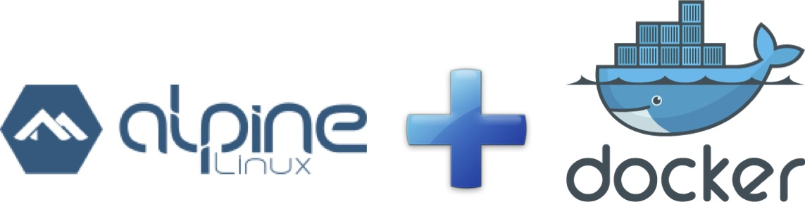
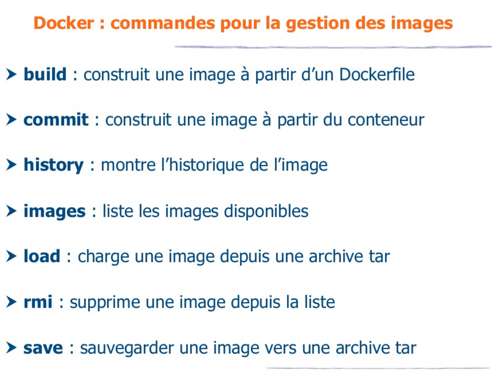
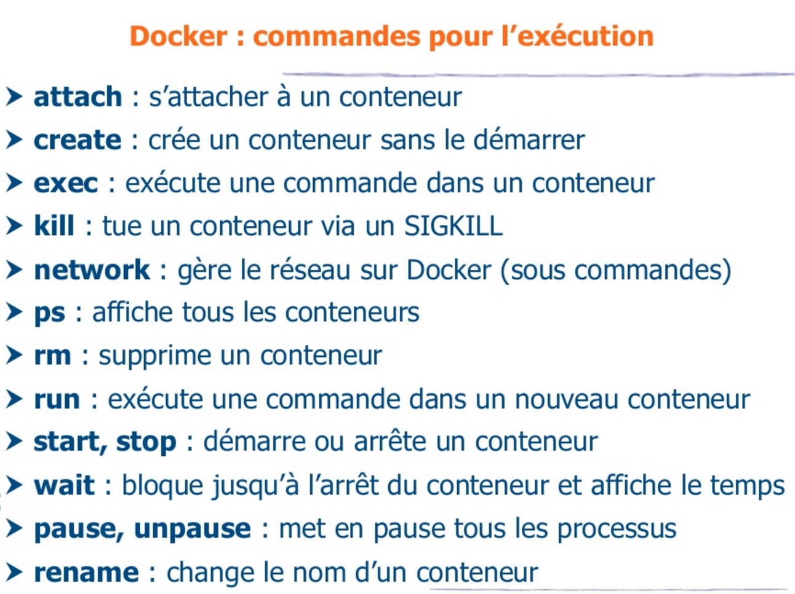
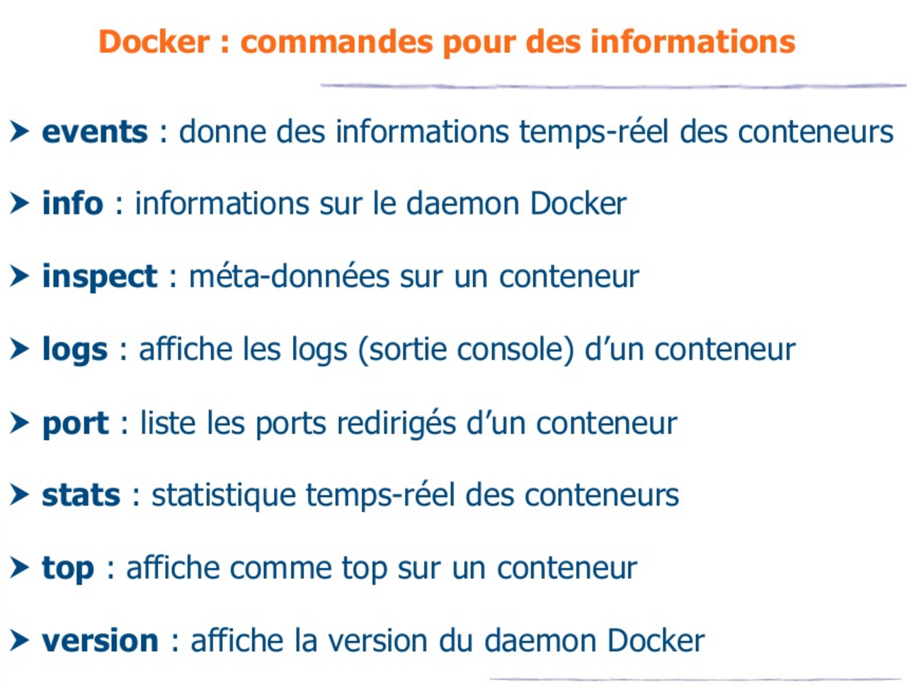
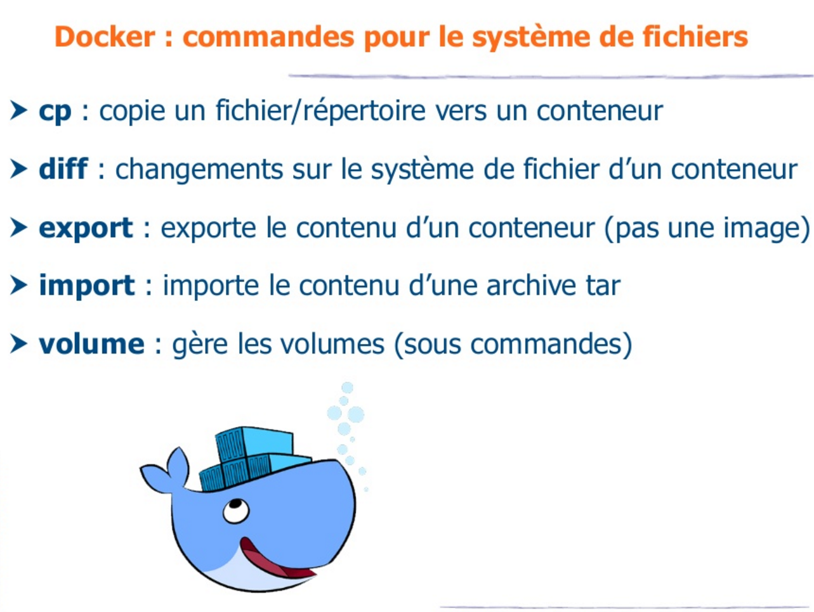
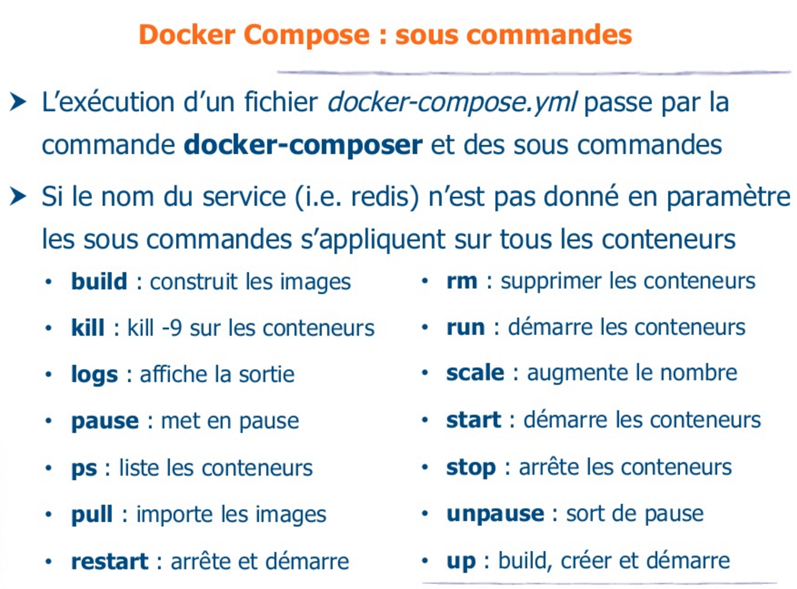
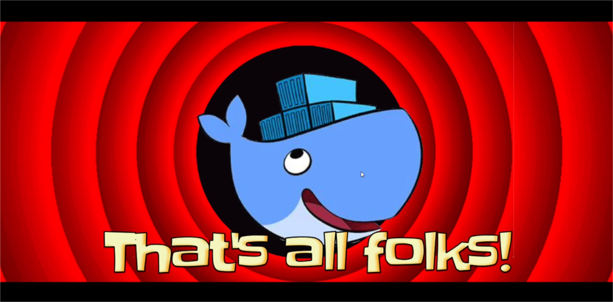

Your browser doesn't support the features required by impress.js, so you
are presented with a simplified version of this presentation.
For the best experience please use the latest Chrome, Safari, or Firefox 10.

Le plan
- Un peu d'Histoire
- Les concepts fondateurs
- Un déballage de la Toolbox
- La stratégie Docker Inc
- Les paradigmes promus par Docker
- De nouvelles problématiques
- L'écosystème Docker
- Quelques perspectives
Un peu d'Histoire : le synopsis
- Bio Solomon Hykes
- Origine du projet
- La start-up qui aurait du être française
- Choix du Go
- Evolution éclair de l'adoption
- Un soupçon de stats

Un peu d'Histoire : l'ère dotCloud
- 2006 - Solomon Hykes diplômé de l'Eptitech
- 2008 - création de dotCloud avec Sébastien Pahl
- Aucun finacement trouvé parmi les business angels français
- Le 1er virage : un changement géographique
- 2010 - Incubation au sein de Y Combinator
- Les start-up de Y Combinator comme early adopters
- "Go, c'est un peu la Suisse des langages modernes"
- 2011 - implantation dans la Silicon Valley
- Demandes récurrentes d'accès à des briques légo du socle dotCloud

Un peu d'Histoire : l'ère Docker
- Le 2ème virage : un changement stratégique
- Modularisation des services internes du PaaS doCloud
- 2013 - ouverture de Docker à l'open source
- Mars 2013 - lancement de Docker Hub
- Septembre 2013 - Red Hat l'intègre à OpenShift
- Fin 2014 - Adoption par Microsoft, Google, Amazon, IBM
- Septembre 2015 - 40% des usages en production
- Novembre 2015 - 1.2 milliards de pulls
- Février 2016 - 2 milliards de pulls / 7000 par min
- Democratisation des PaaS et Caas privés

Le plan
- Un peu d'Histoire
- Les concepts fondateurs
- Un déballage de la Toolbox
- La stratégie Docker Inc
- Les paradigmes promus par Docker
- De nouvelles problématiques
- L'écosystème Docker
- Quelques perspectives
Les concepts fondateurs
- Une première approche
- L'allégorie du container
- Le slogan devOPS
- Le container linux LXC
Concepts fondateurs : Une première approche
- Un mode de virtualisation léger et rapide
- Basé sur les containers linux LXC
- Une execution isolée
- Avec maitrise des flux (port, montage disque)
- Un mécanisme de gestion de configuration
- Avec des scripts d'installation versionnés
- Un outil de déploiement simple et intégré
- Avec un dépôt central des images à installer
Concepts fondateurs : L'allégorie du container

Concepts fondateurs : L'allégorie du container

Concepts fondateurs : L'allégorie du container

Concepts fondateurs : L'allégorie du container

Concepts fondateurs : L'allégorie du container

Concepts fondateurs : L'allégorie du container

Concepts fondateurs : L'allégorie du container
Double abstraction du container

Concepts fondateurs : L'allégorie du container
Double abstraction du container Docker

Concepts fondateurs : Le slogan devOPS
"Build, ship and run any app, anywhere"


Concepts fondateurs : Le container linux LXC
Container vs VM

- Une technologie Linux-only
- Le kernel linux de l'hôte partagé avec les containers
- Un container = un processus linux isolé sur un hôte linux
Le plan
- Un peu d'Histoire
- Les concepts fondateurs
- Un déballage de la Toolbox
- La stratégie Docker Inc
- Les paradigmes promus par Docker
- De nouvelles problématiques
- L'écosystème Docker
- Quelques perspectives
La Toolbox
- Une présentation
- La Registry comme écrin
- L'Engine au cœur de l'écosystème
- Un Dockerfile a son image
- Le Compose pour la palette
- Le Swarm pour orhcestrer l'essaim
- La Machine
- Le Kitematic

La Toolbox : Une présentation
- Briques Open Source sous licence Apache V2
- Développées en Go ou python pour les plus anciennes
- Basées sur des API REST JSON
- le mantra Docker: “batteries included but swappable"
La Toolbox : Une présentation
Un lexique
Container : instance runtime d'une image
Image : template d'un container basé sur l'union de couches de filesystems
Registry : dépôt d'images Docker accessibles par l'API Registry
Dockerfile : Big data generated by your technology infrastructure, security systems and business application
Docker host : VM basée sur un OS Docker-ready
Docker client : CLI permet d'exécuter des commandes Docker
Docker daemon : process exécutant les commandes Docker
Compose : outil de configuration d'une architecture multi-containers à partir d'un fichier yaml
Swarm : outil de gestion d'un cluster de Docker Hosts comme un seul Docker host virtuel
Machine : outil de création de Docker hosts en local, sur un data center ou sur un cloud provider
La Toolbox : Une présentation
L'environnement d'execution Linux

La Toolbox : Une présentation
Le cycle de vie


La Toolbox : La Registry comme écrin
- Une présentation
- La Registry comme écrin
- L'Engine au cœur de l'écosystème
- Un Dockerfile a son image
- Le Compose pour la palette
- Le Swarm
- La Machine
- Le Kitematic
La Toolbox : La Registry comme écrin
Qu'est-ce que la Registry ?
- Projet Open source Distribution sous licence Apache V2
- Développé en Go
- Un lieu central ou stocker et distribuer des images Docker
- Stocke les différentes couches d'une image
- Stocke la description permettant de construire une image
- Expose l'API Registry aux clients Docker
- En V2 emet des notifications webhook (autoredeploy )
- Docker Hub: registry SaaS (images publiques gratuites )
- Docker Trusted Registry: version on-premise de Docker Hub
La Toolbox : La Registry comme écrin
Quelques astuces pour bien choisir son image
- Vérifier soigneusement le contenu du Dockerfile
- Eviter les images sans github associé
- Préférer une image légère : onglet tag pour la taille
- Plébiscitée: stars/downloads/forks de DockerHub/GitHub
- Maintenue: repository automated et dates des tags
- Privilégier les images officielles (après portage sur Alpine)
- Embauche de Natanael Copa créateur d'Alpine
- Février 2016 : Hykes annonce le portage des images officielles sur Alpine

La Toolbox : L'Engine au cœur de l'écosystème
- Une présentation
- La Registry comme écrin
- L'Engine au cœur de l'écosystème
- Un Dockerfile a son image
- Le Compose pour la palette
- Le Swarm
- La Machine
- Le Kitematic

La Toolbox : L'Engine au cœur de l'écosystème
Qu'est-ce que l'Engine ?
- Projet Open source Docker sous licence Apache V2
- Développées en Go
- Composé d'un client CLI pour exécuter des commandes
- Au travers de l'API REST Engine
- Exécutées par le daemon du Host
- Les commandes permettent de
- Gérer des images
- Gérer des containers

La Toolbox : L'Engine au cœur de l'écosystème
Les workflow des commandes de base

La Toolbox : L'Engine au cœur de l'écosystème

La Toolbox : L'Engine au cœur de l'écosystème

La Toolbox : L'Engine au cœur de l'écosystème

La Toolbox : L'Engine au cœur de l'écosystème

La Toolbox : L'Engine au cœur de l'écosystème
Quelques astuces pour se simplifier la vie
docker build -t myImage . : nommer/tagger ses images
docker rmi $(docker images -aq) : supprimer toutes les images
docker run --name myName myImage : nommer ses containers
docker ps -a : afficher tous les containers
docker rm -f myName : arrêter et supprimer son container en une fois
docker rm $(docker ps -aqf status=exited) : supprimer les containers arrêtés
docker exec -it myName /bin/bash : entrer dans un container démarré
docker logs -tf myName : afficher les logs d'un container
La Toolbox : Un Dockerfile à son Image
- Une présentation
- La Registry comme écrin
- L'Engine au cœur de l'écosystème
- Un Dockerfile a son image
- Le Compose pour la palette
- Le Swarm
- La Machine
- Le Kitematic
La Toolbox : Un Dockerfile à son Image
Qu'est-ce qu'une image ?
- Un ensemble de commandes d'installation
- Identifié par un tag organisation/nom:tag
- Un empilement de couches de filesystems
- Se configure avec un fichier Dockerfile
- Qui Doit se trouver dans un répo git
- Qui Peut utiliser le contenu du répertoire du Dockerfile
La Toolbox : Un Dockerfile à son Image
Syntaxe d'un Dockerfile
FROM <image> : image utilisée comme base de la future image
MAINTAINER <name> : auteur de l'image
ENV <key> <value> : définir une variable d'environnement
RUN <command> : exécute la commande d'installation sur l'image
COPY <src> <dest> : ajoute un fichier local dans l'image
VOLUME ["/<dir>"] : répertoire externe monté au démarrage
EXPOSE <port>] : port réseau exposé par le conteneur
CMD ["executable", "param1",...] : commande lancée au démarrage
WORKDIR ["/<dir>"] : devient le répertoire interne courrant
USER <user> : utilisateur Linux utilisé lors du démarrage
ONBUILD <command> : commande executée dans l'image fille
La Toolbox : Un Dockerfile à son Image
Un example de Dockerfile
# Se base sur l'image ubuntu version 14.04
FROM docker-registry.valid.appli-gestion.nc/ubuntu:14.04
MAINTAINER DTSI-Infras
COPY config/proxy-dtsi /etc/apt/apt.conf.d/
RUN apt-get update & \
apt-get install -y nginx
RUN echo "\ndaemon off;" >> /etc/nginx/nginx.conf
VOLUME ["/usr/share/nginx/html/"]
EXPOSE 80
CMD ["nginx"]
La Toolbox : Un Dockerfile à son Image
Quelques astuces pour bien constuire son Dockerfile
- Préciser la version de l'image de base
- Choisir une image de base légère (Alpine)
- Supprimer les caches d'installation
- N'installer que le strict nécessaire
- Placer les instructions les plus longues en haut
- Placer les instructions qui changent le plus en bas
- Regrouper les instructions cohérentes
- En séparant les instructions sur plusieurs lignes
- Utiliser un .dockerignore
- Ne lancer qu'un process par container
La Toolbox : Le Compose pour la palette
- Une présentation
- La Registry comme écrin
- L'Engine au cœur de l'écosystème
- Un Dockerfile a son image
- Le Compose pour la palette
- Le Swarm
- La Machine
- Le Kitematic

La Toolbox : Le Compose pour la palette
- Projet Open source Compose sous licence Apache V2
- Développées en Python
- Anciennement Fig développé par Orchard
- Juillet 2014 Orchard acquis par Docker
- Facile le lancement des containers
- Nous épargne les docker run sans fin
- Permet de composer plusieurs containers
- Se configure avec un fichier yaml
La Toolbox : Le Compose pour la palette

La Toolbox : Le Compose pour la palette
Syntaxe d'un docker-compose.yml
image: <image> : image utilisée pour lancer le container
build: /<dir> : pour construire l'image au préalable
dockerfile: <Dockerfile-alternate> : nom alternatif de Dockerfile
links: -<linkName> : liens vers d'autre containers
ports: -<host:container> : mapping de ports entre host et container
volumes: -<host:container> : volumes montés entre host et container
command: <command> : commande lancée au démarrage
La Toolbox : Le Compose pour la palette
Un example de docker-compose.yml
hello-world:
build: .
volumes:
- ~/tuto-docker/webapp/:/usr/share/nginx/html/
ports:
- 8080:80
Laissons voguer nos containers vers le soleil couchant
Merci à tous, suite au prochain épisode


La Toolbox : Le Swarm
- Une présentation
- La Registry comme écrin
- L'Engine au cœur de l'écosystème
- Un Dockerfile a son image
- Le Compose pour la palette
- Le Swarm
- La Machine
- Le Kitematic
La Toolbox : La Machine
- Une présentation
- La Registry comme écrin
- L'Engine au cœur de l'écosystème
- Un Dockerfile a son image
- Le Compose pour la palette
- Le Swarm
- La Machine
- Le Kitematic

La Toolbox : Le Kitematic
- Une présentation
- La Registry comme écrin
- L'Engine au cœur de l'écosystème
- Un Dockerfile a son image
- Le Compose pour la palette
- Le Swarm
- La Machine
- Le Kitematic

La Toolbox: Execution Plateform

La stratégie commerciale et la standardisation
- Offre commerciale
- Plumbing
- Open Std.
Les paradigmes promus par Docker
- devOPS
- Dynamic paritionning
- Immutable infrastructure
- Pets vs Cows
- Phoenix servers
- Microservices / WOA
- Infrastructure as code
- Horizontal scaling
De nouvelles problématiques
- Discovery backend
- Serice discovery
- Leader election
- Data volume container
- Volume des images
- ...
L'écosystème Docker
- Discovery backend : Etcd, Zookeeper, Consul
- Service discovery : Registrator
- Plugins volume : Flocker
- Plugins network : Flannel, Weave
- Log : Logspoud
- Cluster : Mesos
- Orchestration : Kubernetes, Tutum/Docker cloud, Shippyard, Tsuru; Rancher
- Hosts : CoreOS, Atomic, Boot2Docker
Quelques perspectives
- Unikernels
- Docker Beta for Mac and for Windows